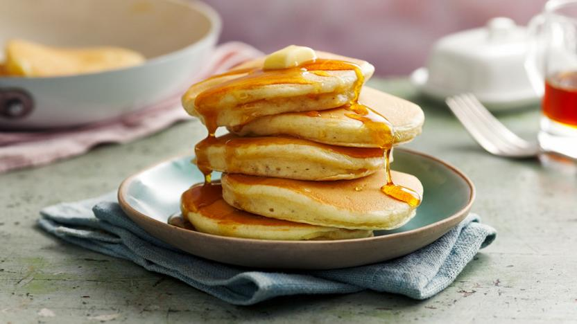

Classic Pancakes Recipe

Description
These classic pancakes are fluffy, easy to make, and perfect for
breakfast or brunch.
Ingredients
- 1 cup all-purpose flour
- 1 tablespoon sugar
- 1 teaspoon baking powder
- ½ teaspoon baking soda
- 1 cup buttermilk
- 1 large egg
- 2 tablespoons melted butter
Steps
- Whisk flour, sugar, baking powder, and baking soda in a bowl.
- In a separate bowl, mix buttermilk, egg, and melted butter.
- Combine wet and dry ingredients, stirring until just combined.
- Cook pancakes on a preheated skillet until bubbles form, then flip.
- Serve warm with syrup and toppings.